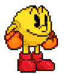
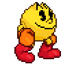

¿Qué es Pac-Man?
SU HISTORIA
 Pac-Man es un videojuego arcade creado por el diseñador Toru Iwatani de la empresa Namco, y distribuido por Midway Games al mercado estadounidense a principios de los años 1980.
 Desde que fue lanzado el 21 de mayo de 1980, fue un éxito. Se convirtió en un fenómeno mundial en la industria de los videojuegos, llegó a tener el récord Guiness del videojuego de arcade más exitoso de todos los tiempos con un total de 293.822 máquinas vendidas desde 1981 hasta 1987 y acabó con el dominio de Space Invaders, donde la acción predominante era shoot 'em up (disparar a todos) para reemplazarla por un formato único, más humorístico y poco violento que gustó a muchísimas personas.
Todos los juegos que estaban disponibles en ese entonces -fines de los 70- eran de tipo violento, de guerra o como el Space Invaders. No había juegos que todos pudieran disfrutar, y especialmente no había ninguno para mujeres. Quería hacer un juego 'cómico' que las mujeres pudiesen disfrutar.
-Toru Iwatani
Visitá el Pac-Man Doodle de Google haciendo click aquí.